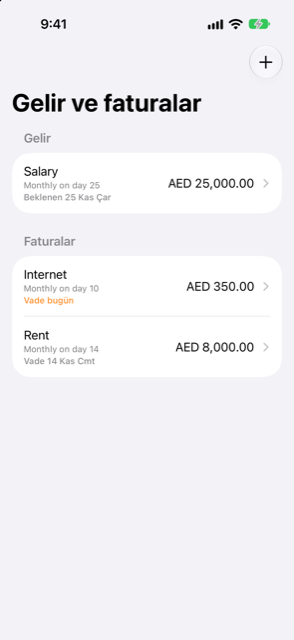

Kılavuz › Planlama
Tekrarlayan gelir ve faturalar
Maaş, kira ve abonelikler: bir kez kurun.
Tekrarlayan gelir ve faturalar, Plan'da her tekrar eden şeyin listesidir: maaşınız, kiranız, abonelikleriniz. Her birini bir kez kurun; tahmin onu kendi takvimine göre sayar.

Ne zaman kullanılır
- Düzenli bir ritimle maaş alıyorsunuz ve tahminde sayılmasını istiyorsunuz.
- Tekrar eden faturalarınız var: kira, okul, abonelikler.
- Damla, geçmişinizde tekrar eden ödemeler fark etmiş ve size bunları sunuyor.
- Tekrarlayan bir ödeme yanlışlıkla kaydedilmiş ya da atlanmıştır ve onu geri almanız gerekir.
Adım adım
- Plan sekmesini açın ve Gelir ve faturalar'a dokunun.
- Ekle'ye dokunun (ve henüz bir şey kurulmamışsa, ekran Bir tane ekle önerir).
- Türü seçin: Fatura ya da Gelir. Formun üstündeki Tür denetimi bunu yapar.
- Bir ad, tutar ve paranın geçtiği hesap girin (bir fatura için Ödeme kaynağı, gelir için Ödemenin yapıldığı hesap).
- Tutar değişiyorsa Tutar değişiyor'u açın ve tek bir sayı yerine bir en düşük ve bir en yüksek tutar girin.
- Tekrar seçin: Her ay, Her hafta, Her 2 hafta, Her 3 ay, Her 6 ay, Her yıl, her ritim için Özel… (her N gün, hafta, ay ya da yıl) ya da Bir kez.
- Bitiyorsa Belirli sayıda ödemeden sonra durur'u açın ve kaç ödeme olacağını ayarlayın. Tarih alanı buna göre İlk ödeme adını alır.
- Gelir için Ne kadar kesin seçin: Sabit: zamanında gelir, Değişken: son dönemin en düşüğünü kullan ya da Düzensiz: yalnızca alındığında say.
- Kaydet'e dokunun.
Listeyi düzgün tutmak
Liste, en yakın vade başta olacak şekilde, Gelir ve Faturalar bölümleri altında sıralıdır. Her satır adını, ritmini ve durumunu gösterir: burada bir fatura varken Vadesi bugün ya da Vadesi yarın turuncu, geçtiyse kırmızıyla Gecikti, yoksa sonraki tarih. Gelir için aynı satırlar Bugün bekleniyor ya da Yarın bekleniyor der.
Geçmişinizde bulundu
Listenin üstünde, Damla geçmişinizde sabit bir tutar ve ritimle tekrar ettiğini fark ettiği ödemeleri gösterir. Her birinin onu tahmininize koyan bir Ekle düğmesi vardır; birini kaydırıp atın ve biri değilse Fatura değil'e dokunun. Geçmişten dokunuşunuz olmadan hiçbir şey eklenmez.
Bir faturanın vadesi geldiğinde
- Yarın ya da bugün vadesi gelen, gecikmiş ve henüz kaydedilmemiş bir fatura ya da gelir, Bugün'de Vade altında görünür. Yaklaşanlar altındaki bir satır, arkasında olan varsa onu açar: bir fatura ya da gelir sayfasını açar, bir kart faturası ödeme sayfasını açar, aşamalı bir alım planını açar.
- Öğeyi açın ve ne zaman yeniden vadesi geleceğini görün, sonra bu sefer farklıysa tutarı, tarihi, hesabı ya da kategoriyi ayarlayın.
- Ödendi olarak işaretle'ye dokunun (gelir için Alındı olarak işaretle). Damla işlemi ekler, o birini tamamlanmış işaretler ve sonraki vadeyi ilerletir. Neler kaydettiğini söyler ve ekranı kapatır.
- Yeni bir tutarı ya da hesabı sonraki seferler için de tutmak üzere Bundan sonra bu bilgileri kullan'ı açın.
- Bu sefer gelmediyse Bunu atla'ya dokunun: hiçbir şey kaydedilmeden tamamlanmış işaretlenir.
- Erken kaydedebilirsiniz. Sonraki vadesine bir haftadan fazla varsa, Damla kaydetmeden önce sorar ("Evet, erken ödedim" / "Evet, aldım"), böylece ikinci bir dokunuş yanlışlıkla gelecek aykini kaydetmez.
- O tutarda bir ödeme kitaplarınızda zaten varsa (diyelim bir banka yazısından), fatura ödenmiş sayılır ve anımsatıcı gösterilmez.
Bilmekte fayda var
- Ne kadar kesin temkinli tahmin çizgisi için önemlidir: Sabit gelir söylediğiniz gibi sayılır, Değişken son dönemin en düşük tutarını kullanır ve Düzensiz yalnızca gerçekten alındığında sayılır. Temkinli çizgi sabit olmayan geliri geciktirir ya da keser.
- Bir satırı kaydırıp Sil'e dokunarak kaldırın; onunla ilgili her şeyi değiştirmek için sayfasındaki Düzenle'yi kullanın.
- Öğenin sayfası, kısa bir Burada kaydedildi bölümü tutar: ona karşı kaydedilen son ödemeler.
- Burada ödendi olarak işaretlediğiniz bir kredi taksit, krediyi düşürür; harcama olarak sayılmaz.
İlgili
Anlaşılmayan ya da eksik bir şey mi var? support@raveniq.ai adresine yazın ve hangi sayfa olduğunu belirtin.